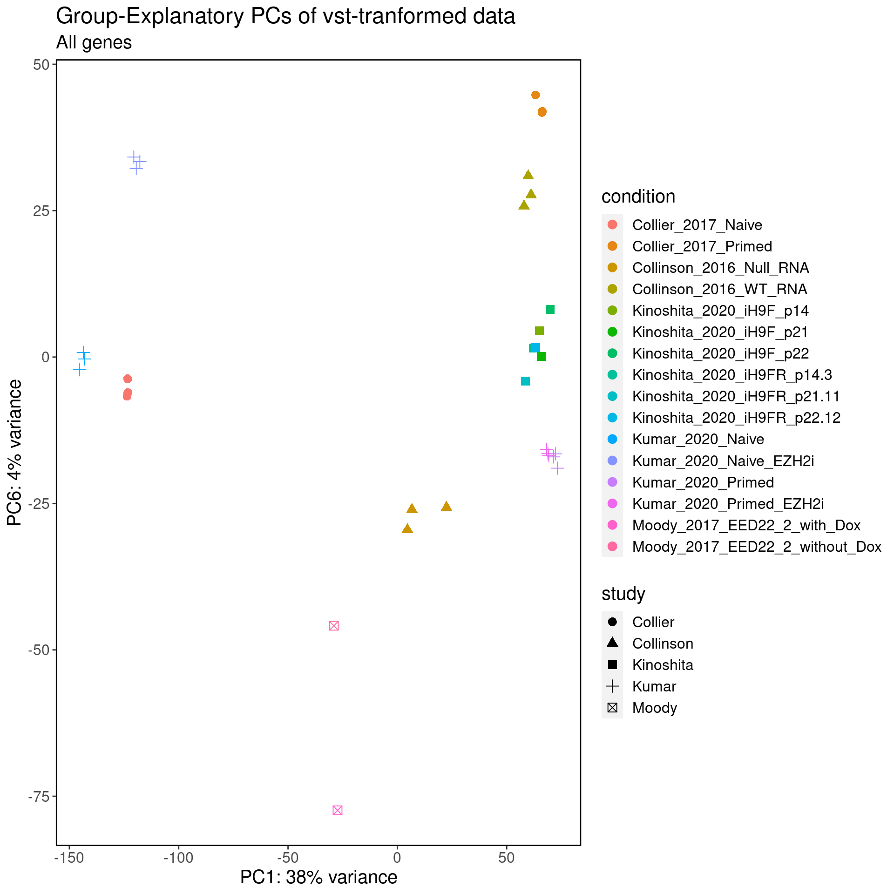
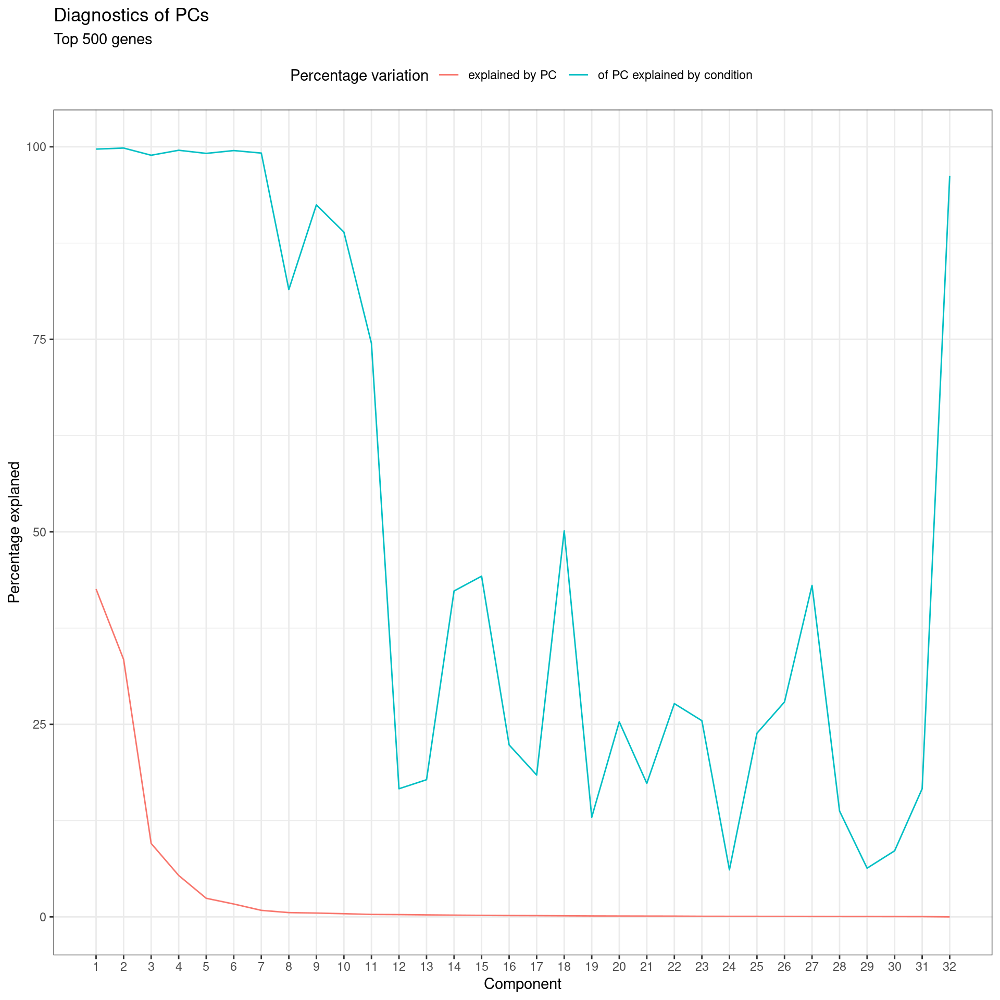

Last updated: 2021-03-25
Checks: 7 0
Knit directory: hesc-epigenomics/
This reproducible R Markdown analysis was created with workflowr (version 1.6.2). The Checks tab describes the reproducibility checks that were applied when the results were created. The Past versions tab lists the development history.
Great! Since the R Markdown file has been committed to the Git repository, you know the exact version of the code that produced these results.
Great job! The global environment was empty. Objects defined in the global environment can affect the analysis in your R Markdown file in unknown ways. For reproduciblity it’s best to always run the code in an empty environment.
The command set.seed(20210202) was run prior to running the code in the R Markdown file. Setting a seed ensures that any results that rely on randomness, e.g. subsampling or permutations, are reproducible.
Great job! Recording the operating system, R version, and package versions is critical for reproducibility.
Nice! There were no cached chunks for this analysis, so you can be confident that you successfully produced the results during this run.
Great job! Using relative paths to the files within your workflowr project makes it easier to run your code on other machines.
Great! You are using Git for version control. Tracking code development and connecting the code version to the results is critical for reproducibility.
The results in this page were generated with repository version 8ed2280. See the Past versions tab to see a history of the changes made to the R Markdown and HTML files.
Note that you need to be careful to ensure that all relevant files for the analysis have been committed to Git prior to generating the results (you can use wflow_publish or wflow_git_commit). workflowr only checks the R Markdown file, but you know if there are other scripts or data files that it depends on. Below is the status of the Git repository when the results were generated:
Ignored files:
Ignored: .Rhistory
Ignored: .Rproj.user/
Ignored: analysis/annotations_cache/
Ignored: analysis/annotations_extended.Rmd
Ignored: analysis/global_bins_extended.Rmd
Ignored: analysis/histone_marks_vs_expression_extended.Rmd
Ignored: data/bed/
Ignored: data/bw
Ignored: data/igv/
Ignored: data/meta/
Ignored: data/other/
Ignored: data/peaks
Ignored: data/rnaseq/
Note that any generated files, e.g. HTML, png, CSS, etc., are not included in this status report because it is ok for generated content to have uncommitted changes.
These are the previous versions of the repository in which changes were made to the R Markdown (analysis/rnaseq_comparison.Rmd) and HTML (docs/rnaseq_comparison.html) files. If you’ve configured a remote Git repository (see ?wflow_git_remote), click on the hyperlinks in the table below to view the files as they were in that past version.
| File | Version | Author | Date | Message |
|---|---|---|---|---|
| Rmd | 8ed2280 | cnluzon | 2021-03-25 | wflow_publish(“./analysis/rnaseq_comparison.Rmd”) |
Compare results from all RNA-seq data (public and ours).
Input files are RSEM output data for all the studies available at the moment.
# Some code copied or adapted from: https://github.com/nf-core/rnaseq/blob/master/bin/deseq2_qc.r
##' PCA pre-processeor
##'
##' Generate all the necessary information to plot PCA from a DESeq2 object
##' in which an assay containing a variance-stabilised matrix of counts is
##' stored. Copied from DESeq2::plotPCA, but with additional ability to
##' say which assay to run the PCA on, and adds an assessment of how well
##' each PC explains the experimental grouping of the data.
##'
##' @param object The DESeq2DataSet object.
##' @param intgroup interesting groups: a character vector of names in 'colData(x)' to use for grouping.
##' @param ntop number of top genes to use for principla components, selected by highest row variance.
##' @param assay the name or index of the assay that stores the variance-stabilised data.
##' @return A data.frame containing the projected data alongside the grouping columns.
##' A 'percentVar' attribute is set which includes the percentage of variation each PC explains,
##' and additionally how much the variation within that PC is explained by the grouping variable.
##' @author Gavin Kelly
plotPCA_vst <- function (object, intgroup = "condition", ntop = 500, assay=length(assays(object))) {
rv <- rowVars(assay(object, assay))
select <- order(rv, decreasing = TRUE)[seq_len(min(ntop, length(rv)))]
pca <- prcomp(t(assay(object, assay)[select, ]))
percentVar <- pca$sdev^2/sum(pca$sdev^2)
if (!all(intgroup %in% names(colData(object)))) {
stop("the argument 'intgroup' should specify columns of colData(dds)")
}
intgroup.df <- as.data.frame(colData(object)[, intgroup, drop = FALSE])
group <- if (length(intgroup) > 1) {
factor(apply(intgroup.df, 1, paste, collapse = ":"))
} else {
colData(object)[[intgroup]]
}
d <- cbind(pca$x, group = group, intgroup.df, name = colnames(object))
percentFrame <- data.frame(PC=seq(along=percentVar), percentVar=100*percentVar, groupR=0.0)
for (ipc in seq(along=percentVar)) {
fit1 <- lm(pca$x[,ipc] ~ group)
percentFrame$groupR[ipc] <- 100*summary(fit1)$r.squared
}
attr(d, "percentVar") <- percentFrame
return(d)
}
read_counts_file <- function(f, id_col = 1, count_col = 3, sample_suffix = "") {
counts <- read.delim(file = f, header = TRUE)
# rownames(counts) <- counts[, id_col]
counts <- counts[, c(id_col, count_col:ncol(counts)), drop = FALSE]
colnames(counts) <- gsub(sample_suffix, "", colnames(counts))
colnames(counts) <- gsub(pattern = '\\.$', replacement = '', colnames(counts))
counts
}
datasets <- c("Collier_2017", "Kinoshita_2021", "Moody_2017", "Kumar_2020", "Collinson_2017")
counts_files <- file.path(params$rnaseqdir, datasets, "rsem.merged.gene_counts.tsv")
counts_all <- lapply(counts_files, read_counts_file)
counts <- reduce(counts_all, full_join, by="gene_id")
rownames(counts) <- counts$gene_id
counts$gene_id <- NULL
#
# cts_file <- "./data/rnaseq/Collier_2017/rsem.merged.gene_counts.tsv"
cores <- 2
# counts <- read_counts_file(cts_file)
samples.vec <- sort(colnames(counts))
groups <- sub("_[^_]+$", "", samples.vec)
counts <- counts[,samples.vec,drop=FALSE]
coldata <- data.frame(row.names=colnames(counts), condition=groups)
dds <- DESeqDataSetFromMatrix(countData=round(counts), colData=coldata, design=~ condition)converting counts to integer modeWarning in DESeqDataSet(se, design = design, ignoreRank): some variables in
design formula are characters, converting to factorsdds <- DESeq(dds, parallel=TRUE, BPPARAM=MulticoreParam(cores))estimating size factorsestimating dispersionsgene-wise dispersion estimates: 2 workersmean-dispersion relationshipfinal dispersion estimates, fitting model and testing: 2 workersvst <- TRUE
if (vst == FALSE) {
vst_name <- "rlog"
rld <- rlog(dds)
} else {
vst_name <- "vst"
rld <- varianceStabilizingTransformation(dds)
}
assay(dds, vst_name) <- assay(rld)
ntop <- c(500, Inf)
for (n_top_var in ntop) {
pca.data <- plotPCA_vst(dds, assay=vst_name,intgroup=c("condition"),ntop=n_top_var)
# Shape by study color by group
pca.data$study <- str_split_fixed(pca.data$group, "_", 3)[, 1]
percentVar <- round(attr(pca.data, "percentVar")$percentVar)
plot_subtitle <- ifelse(n_top_var==Inf, "All genes", paste("Top", n_top_var, "genes"))
pl <- ggplot(pca.data, aes(PC1, PC2, color=condition, shape=study)) +
geom_point(size=4) +
xlab(paste0("PC1: ",percentVar[1],"% variance")) +
ylab(paste0("PC2: ",percentVar[2],"% variance")) +
labs(title = paste0("First PCs on ", vst_name, "-transformed data"), subtitle = plot_subtitle) +
theme(legend.position="right",
panel.grid.major = element_blank(),
panel.grid.minor = element_blank(),
panel.background = element_blank(),
panel.border = element_rect(colour = "black", fill=NA, size=1),
text = element_text(size = 15),
legend.direction = "vertical")
print(pl)
pl <- ggplot(attr(pca.data, "percentVar"), aes(x=PC, y=percentVar)) +
geom_line(aes(colour="explained by PC")) +
geom_line(aes(y=groupR, colour="of PC explained by condition")) +
scale_x_continuous(breaks=seq(along=percentVar), minor_breaks=NULL) +
labs(title="Diagnostics of PCs", subtitle=plot_subtitle, x="Component", y="Percentage explaned", colour="Percentage variation") +
theme_bw() +
theme(legend.position="top")
print(pl)
pc_r <- order(attr(pca.data, "percentVar")$groupR, decreasing=TRUE)
pl <- ggplot(pca.data, aes_string(paste0("PC", pc_r[1]), paste0("PC", pc_r[2]), color="condition", shape="study")) +
geom_point(size=3) +
xlab(paste0("PC", pc_r[1], ": ",percentVar[pc_r[1]],"% variance")) +
ylab(paste0("PC", pc_r[2], ": ",percentVar[pc_r[2]],"% variance")) +
labs(title = paste0("Group-Explanatory PCs of ", vst_name, "-tranformed data"), subtitle = plot_subtitle) +
theme(legend.position="right",
panel.grid.major = element_blank(),
panel.grid.minor = element_blank(),
panel.background = element_blank(),
panel.border = element_rect(colour = "black", fill=NA, size=1),
text = element_text(size = 15),
legend.direction = "vertical")
print(pl)
}
library(pheatmap)
library(RColorBrewer)
## SAMPLE CORRELATION HEATMAP
sampleDists <- dist(t(assay(dds, vst_name)))
sampleDistMatrix <- as.matrix(sampleDists)
colors <- colorRampPalette( rev(brewer.pal(9, "Blues")) )(255)
pheatmap(
border_color = "white",
sampleDistMatrix,
clustering_distance_rows=sampleDists,
clustering_distance_cols=sampleDists,
col=colors,
main=paste("Euclidean distance between", vst_name, "of samples")
)vst_name <- "rlog"
rld <- rlog(dds)rlog() may take a few minutes with 30 or more samples,
vst() is a much faster transformationassay(dds, vst_name) <- assay(rld)
ntop <- c(500, Inf)
for (n_top_var in ntop) {
pca.data <- plotPCA_vst(dds, assay=vst_name,intgroup=c("condition"),ntop=n_top_var)
# Shape by study color by group
pca.data$study <- str_split_fixed(pca.data$group, "_", 3)[, 1]
percentVar <- round(attr(pca.data, "percentVar")$percentVar)
plot_subtitle <- ifelse(n_top_var==Inf, "All genes", paste("Top", n_top_var, "genes"))
pl <- ggplot(pca.data, aes(PC1, PC2, color=condition, shape=study)) +
geom_point(size=4) +
xlab(paste0("PC1: ",percentVar[1],"% variance")) +
ylab(paste0("PC2: ",percentVar[2],"% variance")) +
labs(title = paste0("First PCs on ", vst_name, "-transformed data"), subtitle = plot_subtitle) +
theme(legend.position="right",
panel.grid.major = element_blank(),
panel.grid.minor = element_blank(),
panel.background = element_blank(),
panel.border = element_rect(colour = "black", fill=NA, size=1),
text = element_text(size = 15),
legend.direction = "vertical")
print(pl)
pl <- ggplot(attr(pca.data, "percentVar"), aes(x=PC, y=percentVar)) +
geom_line(aes(colour="explained by PC")) +
geom_line(aes(y=groupR, colour="of PC explained by condition")) +
scale_x_continuous(breaks=seq(along=percentVar), minor_breaks=NULL) +
labs(title="Diagnostics of PCs", subtitle=plot_subtitle, x="Component", y="Percentage explaned", colour="Percentage variation") +
theme_bw() +
theme(legend.position="top")
print(pl)
pc_r <- order(attr(pca.data, "percentVar")$groupR, decreasing=TRUE)
pl <- ggplot(pca.data, aes_string(paste0("PC", pc_r[1]), paste0("PC", pc_r[2]), color="condition", shape="study")) +
geom_point(size=3) +
xlab(paste0("PC", pc_r[1], ": ",percentVar[pc_r[1]],"% variance")) +
ylab(paste0("PC", pc_r[2], ": ",percentVar[pc_r[2]],"% variance")) +
labs(title = paste0("Group-Explanatory PCs of ", vst_name, "-tranformed data"), subtitle = plot_subtitle) +
theme(legend.position="right",
panel.grid.major = element_blank(),
panel.grid.minor = element_blank(),
panel.background = element_blank(),
panel.border = element_rect(colour = "black", fill=NA, size=1),
text = element_text(size = 15),
legend.direction = "vertical")
print(pl)
}
## SAMPLE CORRELATION HEATMAP
sampleDists <- dist(t(assay(dds, vst_name)))
sampleDistMatrix <- as.matrix(sampleDists)
colors <- colorRampPalette( rev(brewer.pal(9, "Blues")) )(255)
pheatmap(
sampleDistMatrix,
clustering_distance_rows=sampleDists,
clustering_distance_cols=sampleDists,
col=colors,
main=paste("Euclidean distance between", vst_name, "of samples")
)
sessionInfo()R version 4.0.4 (2021-02-15)
Platform: x86_64-pc-linux-gnu (64-bit)
Running under: Ubuntu 20.04.2 LTS
Matrix products: default
BLAS: /usr/lib/x86_64-linux-gnu/openblas-pthread/libblas.so.3
LAPACK: /usr/lib/x86_64-linux-gnu/openblas-pthread/liblapack.so.3
locale:
[1] LC_CTYPE=en_US.UTF-8 LC_NUMERIC=C
[3] LC_TIME=sv_SE.UTF-8 LC_COLLATE=en_US.UTF-8
[5] LC_MONETARY=sv_SE.UTF-8 LC_MESSAGES=en_US.UTF-8
[7] LC_PAPER=sv_SE.UTF-8 LC_NAME=C
[9] LC_ADDRESS=C LC_TELEPHONE=C
[11] LC_MEASUREMENT=sv_SE.UTF-8 LC_IDENTIFICATION=C
attached base packages:
[1] parallel stats4 stats graphics grDevices utils datasets
[8] methods base
other attached packages:
[1] RColorBrewer_1.1-2 pheatmap_1.0.12
[3] forcats_0.5.1 stringr_1.4.0
[5] purrr_0.3.4 readr_1.4.0
[7] tidyr_1.1.2 tibble_3.0.6
[9] tidyverse_1.3.0 BiocParallel_1.24.1
[11] DESeq2_1.30.0 SummarizedExperiment_1.20.0
[13] Biobase_2.50.0 MatrixGenerics_1.2.0
[15] matrixStats_0.58.0 GenomicRanges_1.42.0
[17] GenomeInfoDb_1.26.2 IRanges_2.24.1
[19] S4Vectors_0.28.1 BiocGenerics_0.36.0
[21] knitr_1.31 ggpubr_0.4.0.999
[23] dplyr_1.0.4 reshape2_1.4.4
[25] ggplot2_3.3.3 wigglescout_0.12.8
[27] workflowr_1.6.2
loaded via a namespace (and not attached):
[1] colorspace_2.0-0 ggsignif_0.6.0 ellipsis_0.3.1
[4] rio_0.5.16 rprojroot_2.0.2 XVector_0.30.0
[7] fs_1.5.0 rstudioapi_0.13 farver_2.0.3
[10] listenv_0.8.0 furrr_0.2.2 bit64_4.0.5
[13] lubridate_1.7.9.2 AnnotationDbi_1.52.0 xml2_1.3.2
[16] codetools_0.2-18 splines_4.0.4 cachem_1.0.4
[19] geneplotter_1.68.0 jsonlite_1.7.2 Rsamtools_2.6.0
[22] broom_0.7.4 annotate_1.68.0 dbplyr_2.1.0
[25] compiler_4.0.4 httr_1.4.2 backports_1.2.1
[28] assertthat_0.2.1 Matrix_1.3-2 fastmap_1.1.0
[31] cli_2.3.0 later_1.1.0.1 htmltools_0.5.1.1
[34] tools_4.0.4 gtable_0.3.0 glue_1.4.2
[37] GenomeInfoDbData_1.2.4 Rcpp_1.0.6 carData_3.0-4
[40] cellranger_1.1.0 vctrs_0.3.6 Biostrings_2.58.0
[43] rtracklayer_1.50.0 xfun_0.21 globals_0.14.0
[46] rvest_0.3.6 openxlsx_4.2.3 lifecycle_1.0.0
[49] rstatix_0.7.0 XML_3.99-0.5 future_1.21.0
[52] zlibbioc_1.36.0 scales_1.1.1 hms_1.0.0
[55] promises_1.2.0.1 yaml_2.2.1 curl_4.3
[58] memoise_2.0.0 stringi_1.5.3 RSQLite_2.2.3
[61] highr_0.8 genefilter_1.72.0 zip_2.1.1
[64] rlang_0.4.10 pkgconfig_2.0.3 bitops_1.0-6
[67] evaluate_0.14 lattice_0.20-41 labeling_0.4.2
[70] GenomicAlignments_1.26.0 bit_4.0.4 tidyselect_1.1.0
[73] parallelly_1.23.0 plyr_1.8.6 magrittr_2.0.1
[76] R6_2.5.0 generics_0.1.0 DelayedArray_0.16.0
[79] DBI_1.1.1 pillar_1.4.7 haven_2.3.1
[82] whisker_0.4 foreign_0.8-81 withr_2.4.1
[85] survival_3.2-7 abind_1.4-5 RCurl_1.98-1.2
[88] modelr_0.1.8 crayon_1.4.1 car_3.0-10
[91] rmarkdown_2.6 locfit_1.5-9.4 grid_4.0.4
[94] readxl_1.3.1 data.table_1.13.6 blob_1.2.1
[97] git2r_0.28.0 reprex_1.0.0 digest_0.6.27
[100] xtable_1.8-4 httpuv_1.5.5 munsell_0.5.0